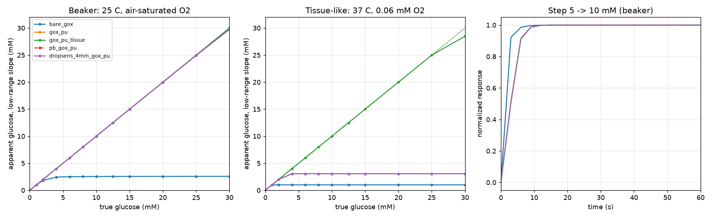

An open continuous glucose monitor. Our own sensor, open electronics, open calibration, and a pod you keep instead of throwing away.
In development. Has not measured glucose. Not for treatment decisions.
Sealed pebble that clicks into each new base and charges between wears.
The only part that touches skin is the part you throw away.
Glucose oxidase turns glucose into peroxide. A membrane meters glucose in and lets oxygen through.
Built on UCSD's Biocoin: potentiostat, Bluetooth, firmware and dock, all published.
No glucose value without a valid calibration, a warmed-up sensor and in-range data.
